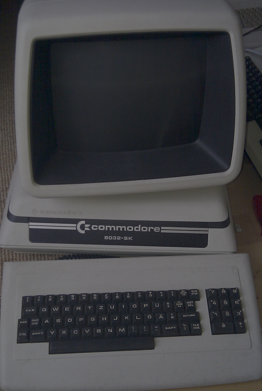
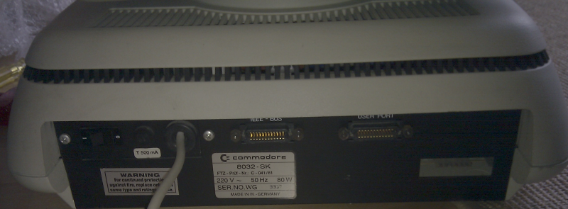
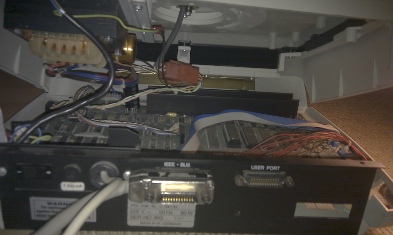
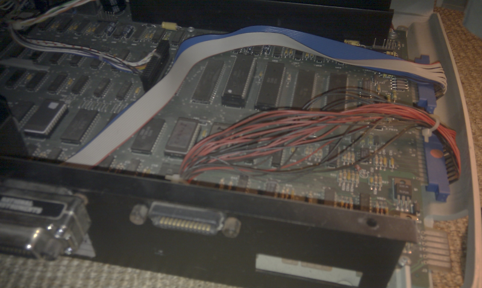
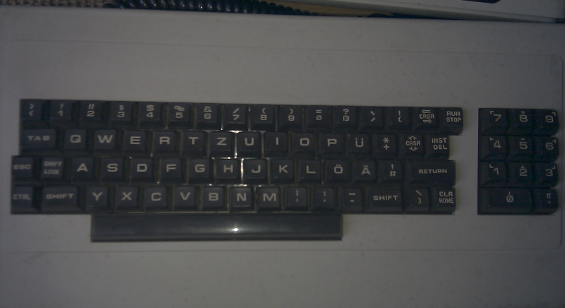

PET index - 8032-SK
(C) 2011- André Fachat
When Commodore decided to build a complete new PET, with new case and new, more compact board (see the 8296 for the result!) they managed to get the case ready earlier than the board. Probably they only re-used the high-profile case from the not-so-successful B-series (710, 720 models, aka CBM-II). At least the 8296 (like the 8032 with 64k expansion, aka 8096) has 96kByte of usable RAM, so it would be direct competition to the B-series. So they probably decided to build the 8296 only after they found that the B-series wasn't a real blockbuster.
Anyway, as a result they decided to build the old board into the new case before they got the new, 8296 board. The only problem was that the new board did not really fit very well into the new case. So they had to improvise.
The result of this was the 8032-SK. It is in fact the old 8032 board in a new rounded case with swivel screen. But inside the case, the board is turned 90 degrees from its usual position - with the result that the user port and IEEE488 ports of the board are not at the back side of the computer. Thus Commodore used extra cables from the card-edge board connectors to the back side of the computer. There they added standard IEEE488 connectors (like on the floppy drives) for both the user port and the IEEE488 port. Also the keyboard needed to be connected with a separate cable from the board to the case connector (which is soldered onto the new board in the 8296)
As the board is quite large for the case, the transformer had to be mounted on the top part of the case (and not on the bottom as in the 8296).
As the wikipedia (Germany entry only it seems) shows, there have been 8096-SK machines as well.
One annoyance this new case has is that it opens on the back side. All other PET cases open on the front, which was very convenient for maintenance. The old cases have a built-in rod to keep the case open so you could measure on the board and see the screen at the same time. This was not possible with the new case.
| A 8032-SK: |  |  | The 8032-SK looked like a 8296 from the outside... |
| ... but the back side gives it away: |  |
|  | With the back side open you get a glimpse of the compromises necessary to get the old board into the new case |
| Here a close-up of the IEEE488 and user port cables |  |
|  | My 8032-SK has the German business keyboard. |
{kind=link}
{kind=link}
{kind=link}
{kind=link}
{kind=link}
Return to Homepage